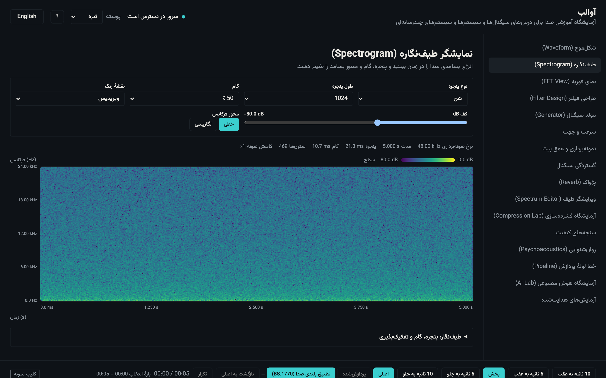
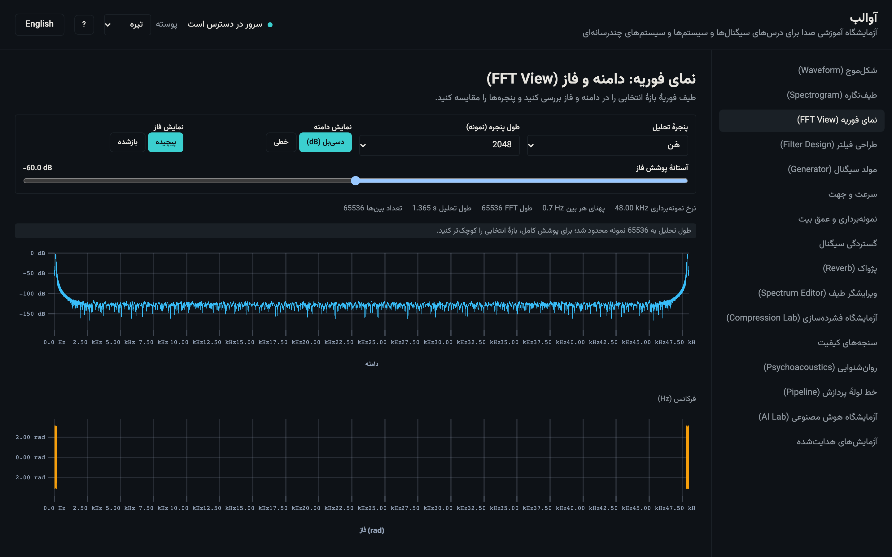
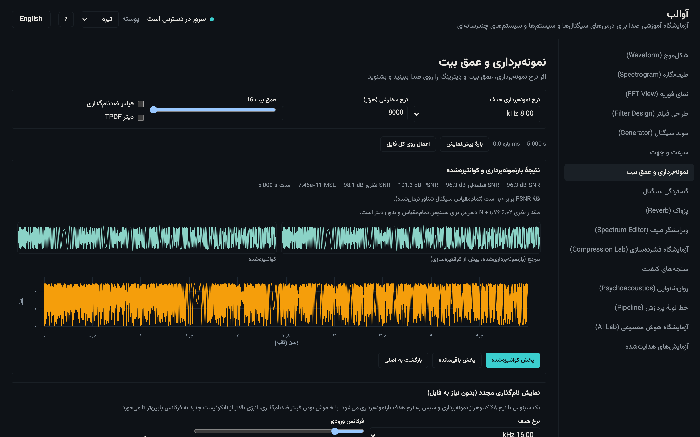
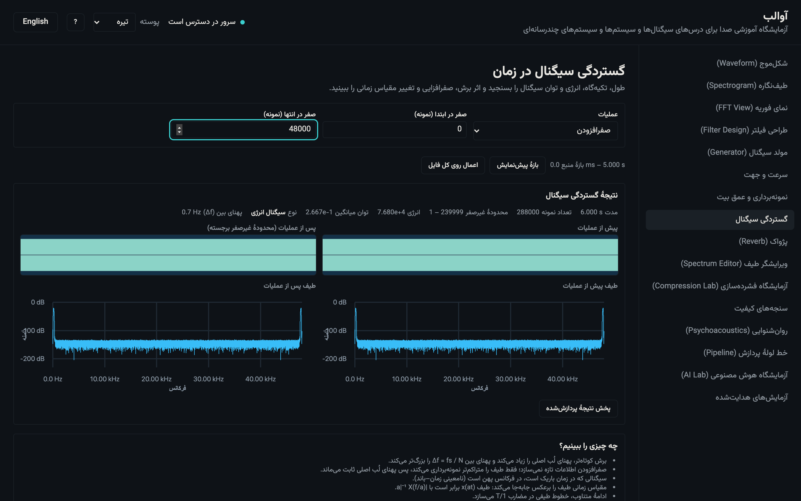
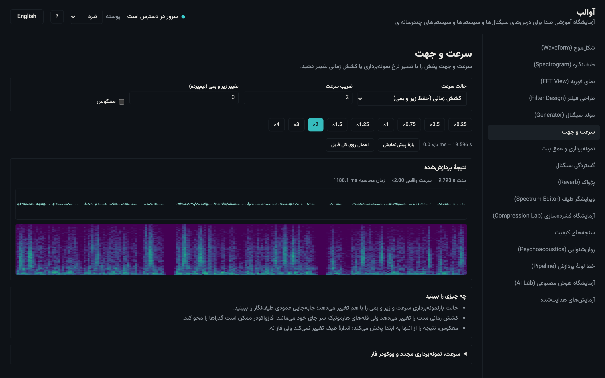
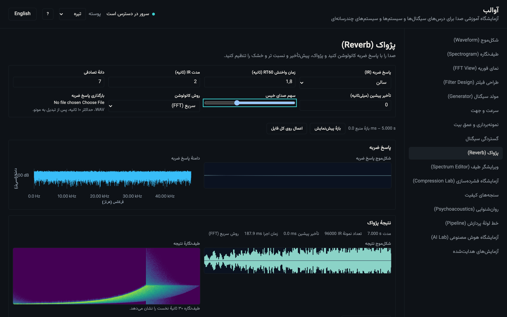
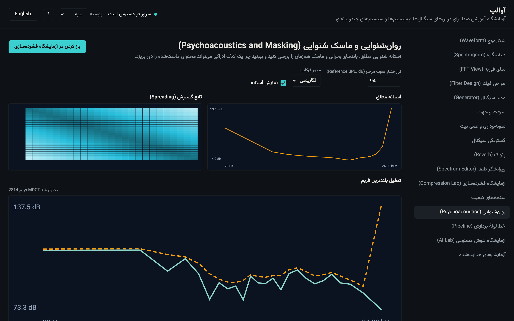
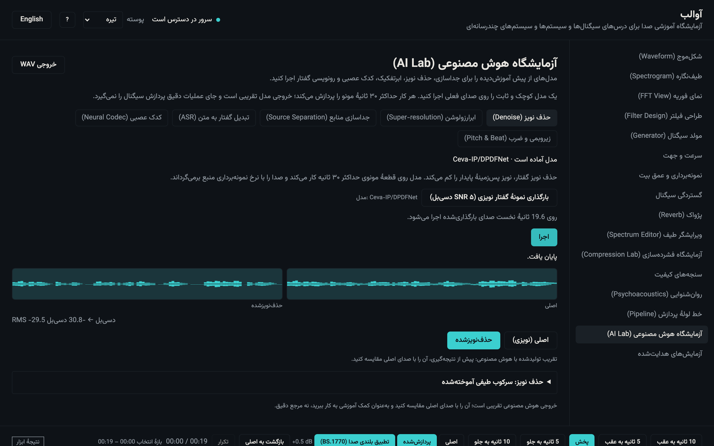

گزارش پروژهٔ درسی · نسخهٔ Wave 6
آوالب
AVALAB
آزمایشگاه صوتی تعاملی برای درسهای سیگنالها و سیستمها و سیستمهای چندرسانهای
این گزارش از نتایج اندازهگیریشدهٔ همین مخزن ساخته شده است. هیچ عدد کارایی، شناسهٔ مدل یا نتیجهٔ آزمایشی ابداع نشده است. صداهای نمونه خودتولید و CC0 هستند؛ تصاویر، خروجی مستقیم برنامهاند.
چکیدهٔ اجرایی
آوالب یک آزمایشگاه صوتی تحت وب و دوزبانه است که دانشجو را از دیدن شکلموج و طیفنگاره تا شنیدن اثر الگوریتمهای پردازش سیگنال و فشردهسازی همراه میکند. هر ابزار، محاسبهٔ واقعی را در مرورگر یا سرور انجام میدهد و در کنار آن، فرمول، توضیح کوتاه، نکات مشاهده و دامهای رایج را نشان میدهد.
پردازش زنده در مرورگر
تبدیل فوریه، طیفنگاره، فیلتر، کانولوشن، بازنمونهبرداری، کوانتیزهسازی، کدگذارهای دستنویس و خط لولهٔ پردازش در Web Worker اجرا میشوند. رشتهٔ اصلی رابط کاربری هیچ تبدیل سنگینی انجام نمیدهد.
کدک و مدل در سرور
کدکهای واقعی MP3، AAC، Opus، Vorbis و FLAC با
ffmpeg و ابزارهای هوش مصنوعی با PyTorch و
مدلهای تثبیتشده اجرا میشوند. مدلها یکبار دانلود و سپس
بهصورت آفلاین استفاده میشوند.
پوشش آموزشی
هجده قابلیت اصلی، ۱۴ ابزار با پنل نظریه و ۱۹ آزمایش هدایتشده پیادهسازی شدهاند. هر آزمایش گامهای عملی و observation مورد انتظار دارد.
وضعیت انتشار
مجموعهٔ آزمونها، آزمونهای سرتاسری دوزبانه، آزمونهای API، پشتهٔ Docker و اجرای آفلاین مدلها در همین نسخه اجرا و مستند شدهاند. مسیر GPU اختیاری است و هنوز آزمون نشده است.
مخاطب: دانشجویان دو درس نامبرده، استاد درس و بازبین فنی. رابط پیشفرض فارسی و راستبهچپ است؛ همهٔ نمودارها، محورها و اعداد فنی چپبهراست میمانند.
۱. نگاشت درسها
جدول زیر قابلیتهای اصلی را به موضوعهای دو درس متصل میکند. ستون
نخست شناسهٔ قابلیت در AGENTS.md است و ستون دوم،
کاربرد کلاسی آن را میگوید.
| قابلیت | سیگنالها و سیستمها | سیستمهای چندرسانهای |
|---|---|---|
| F01 ورودی صدا | نمونهبرداری، بازنمونهبرداری، کانال | قالبهای صوتی، نرمالسازی، ffmpeg |
| F02 شکلموج و طیفنگاره | نمایش زمان–فرکانس، پنجره، hop | تحلیل محتوای صوتی و نمایش طیف |
| F03 نرخ نمونهبرداری و عمق بیت | قضیهٔ نایکوئیست، دگرسانی، خطای کوانتیزهسازی | کیفیت دیجیتال، دیتر، نسبت سیگنال به نویز |
| F04 آزمایشگاه فشردهسازی | آنتروپی، پیشبینی، کد هافمن | RLE، μ-law/A-law، MDCT، کدکهای واقعی |
| F05 سنجههای کیفیت | MSE، SNR، PSNR، همبستگی تأخیر | نرخ–اعوجاج، ارزیابی کدک |
| F06 سرعت و جهت پخش | تغییر مقیاس زمانی، تبدیل فوریهٔ کوتاهمدت | حفظ گام در برابر تغییر سرعت |
| F07 گستردگی سیگنال | انرژی، توان، تکیهگاه، جابهجایی و مقیاس زمانی | طول قطعه، پنجرهبندی و تحلیل |
| F08 تبدیل فوریه | DFT، FFT، پنجره، نشت طیفی | تحلیل فرکانسی، نمایش فاز |
| F09 ویرایشگر Re/Im | تقارن هرمیتی، بازسازی، فاز | دستکاری طیف و اثر شنیداری |
| F10 معکوس و پژواک | کانولوشن، پاسخ ضربه، سیستم LTI | افکت اتاق، پاسخ ضربهٔ واقعی |
| F11 طراحی فیلتر | قطب و صفر، پاسخ فرکانسی، پایداری | اکولایزر، حذف نویز باندی |
| F12 مولد و سری فوریه | سیگنالهای پایه، گبس، هارمونیک | ساخت نمونهٔ آزمایشی، AM/FM |
| F13 روانآکوستیک | پوشش فرکانسی، آستانهٔ شنوایی | مدل ماسک، تخصیص بیت |
| F14 ابزارهای هوش مصنوعی | — | جداسازی، نویززدایی، فوقتفکیک، ASR، کدک عصبی |
| F15 خط لولهٔ پردازش | ترکیب سیستمها، ترتیب عملگرها | زنجیرهٔ پردازش چندرسانهای |
| F16 لایهٔ آموزش | نظریه، آزمایش هدایتشده، گزارش | آزمایشگاه نرمافزاری و مستندسازی |
| F17 دوزبانگی و RTL | — | دسترسپذیری و ارائهٔ بینالمللی |
| F18 کیفیت زندگی | — | A/B همبلندی، میانبر، تم، ذخیرهٔ تنظیمات |
۲. معماری و مسیر داده
آوالب یک تکمخزن با دو زماناجراست: یک برنامهٔ تکصفحهای React و یک سرویس FastAPI. تصمیم اصلی این است که هر محاسبه در جایی اجرا شود که پاسخ زنده ممکن باشد.
شکل ۱. مسیر داده: تحلیلهای تعاملی در مرورگر؛ کدک واقعی و مدل در سرور.
مرزهای مسئولیت
- مرورگر: شکلموج، طیفنگاره، FFT/STFT، ویرایش طیف، فیلتر، کانولوشن، بازنمونهبرداری، کوانتیزهسازی، کدکهای دستنویس، سنجهها، تغییر زمان و خط لوله.
- سرور: رمزگشایی هر قالبی که مرورگر نمیشناسد، کدکهای واقعی، مدلهای عصبی، تحلیل گام/ضربان و کارهای طولانی با پیشرفت SSE.
- حافظه: فایل صوتی اصلی تغییرناپذیر است؛ نتیجههای مشتق با کلید «عملگر + پارامتر + هش ورودی» نگهداری میشوند. فایلهای سرور پس از TTL پیشفرض ۶۰ دقیقه حذف میشوند.
قاعدهٔ طراحی: اگر نتیجه باید همزمان با حرکت لغزنده تغییر کند، محاسبه در مرورگر است. اگر کدک واقعی یا شبکهٔ عصبی لازم است، محاسبه در سرور است.
۳. الگوریتمها و فرمولها
همهٔ الگوریتمهای دستنویس در packages/dsp قرار دارند،
خالص و بدون وابستگی به DOM هستند و با بردارهای طلایی
(NumPy/SciPy/librosa) یا آزمونهای
ویژگی سنجیده میشوند. جدول کامل در
docs/ALGORITHMS.md است؛ اینجا خلاصهٔ آموزشی میآید.
نمونهبرداری و دگرسانی
x[n] = x(nTs), fs = 1/Ts, falias = |f − fs·round(f/fs)|
اگر بسامد سیگنال از نصف نرخ نمونهبرداری بیشتر شود، مؤلفه به باند پایین تا میخورد. آوالب همان بسامد تاخورده را هم پیشبینی میکند و هم در خروجی اندازه میگیرد؛ خاموشکردن فیلتر ضددگرسانی، تفاوت را شنیدنی میکند.
کوانتیزهسازی و نسبت سیگنال به نویز
SQNRdB ≈ 6.02·N + 1.76
برای کوانتیزهکنندهٔ یکنواخت با N بیت و ورودی سینوسی تماممقیاس، این رابطه مرجع نظری است. آوالب کوانتیزهسازی یکنواخت، دیتر TPDF و خطای کوانتیزهسازی را نشان میدهد و SNR اندازهگیریشده را با همین مرجع مقایسه میکند.
DFT و FFT
X[k] = Σn=0N−1 x[n]·e−j2πkn/N
DFT ساده برای آموزش O(N²) است؛ FFT رادیکس-۲ کوولی–توکی برای توانهای دو و بلوستین برای طول دلخواه. خطای نسبی مسیر Float64 در برابر بردار طلایی تا 1e-9 و در Float32 تا 1e-5 پذیرفته میشود.
پنجره و STFT
Xm[k] = Σn w[n]·x[n+mH]·e−j2πkn/L
پنجرهٔ مستطیلی، هَن، همینگ، بلکمن و کایزر در دسترساند. پهنای لُب اصلی و سطح لُب کناری اندازهگیری میشود تا دانشجو ببیند نشت طیفی چگونه با انتخاب پنجره trade-off میشود. دسیبل نسبت به سینوس تماممقیاس کالیبره است، نه نسبت به خام FFT.
کانولوشن و پژواک
y[n] = (x ∗ h)[n] = Σm x[m]·h[n−m]
کانولوشن مستقیم برای پاسخهای کوتاه و کانولوشن سریع (overlap-add با FFT) برای پاسخهای بلند استفاده میشود. پژواک، کانولوشن صدا با پاسخ ضربهٔ اتاق است؛ «معکوس زمانی» عملیاتی جدا و مستقل است و در رابط کاربری با آن اشتباه نمیشود.
فیلتر FIR و IIR
H(z) = Σ bkz−k / (1 + Σ akz−k)
FIR با روش پنجره و IIR با باترورث، چبیشف I و بیکواد RBJ طراحی میشود. نمودار قطب–صفر، پایداری، پاسخ دامنه، فاز و تأخیر گروه نمایش داده میشود. پایداری IIR با شعاع قطب و یک آزمون فروپاشی پاسخ ضربه بررسی میشود؛ ضریبها هرگز برای پنهانکردن ناپایداری دستکاری نمیشوند.
بازنمونهبرداری
y[n] = Σk x[k]·sinc((n·L/M) − k)
مسیر کایزر-سینک برای جلوگیری از دگرسانی و مسیر بدون فیلتر برای نمایش عمدی دگرسانی. نسبت L/M گویاست و نرخهای غیرصحیح قبل از محاسبه رد میشوند.
MDCT و روانآکوستیک
X[k] = Σn=02N−1 x[n]·cos(π(2k+1)(2n+1+N)/(4N))
کدک آموزشی MDCT با پنجرهٔ سینوسی و TDAC بازسازی کامل میدهد. لایهٔ ماسک، ۲۵ باند بارک، آستانهٔ شنوایی Terhardt و پخش شرویدر را روی هم میگذارد تا بیتهای صرفشده در باندهای ماسکشده دیده شوند. این مدل آموزشی است، نه مدل روانآکوستیک استاندارد MPEG.
کدهای بیاتلاف
RLE با قالب بایت ثابت، هافمن متعارف مطابق RFC 1951، و پیشبینی مرتبهٔ اول + هافمن به سبک FLAC. همهٔ مسیرهای بیاتلاف باید روی شبکهٔ PCM صحیح بیتبهبیت بازگردند و وضعیت «bit-exact» در رابط کاربری نمایش داده میشود.
سنجههای کیفیت
MSE = (1/N)Σ(x−y)², SNRdB = 10·log10(Σx²/Σ(x−y)²)
PSNR با قلهٔ ۱٫۰ برای سیگنال نرمالشده تعریف میشود و همین تعریف در رابط کاربری نوشته شده است. کدکها تأخیر دارند؛ بنابراین مقایسه پس از همترازی همبستگی متقابل انجام میشود، نه روی سیگنال ناهمتراز.
فازوکودر و تغییر گام
تغییر زمان با STFT، انتشار فاز هر بین و بازسازی WOLA انجام میشود؛ تغییر گام با تغییر زمان و سپس بازنمونهبرداری نسبت معکوس. حالت بازنمونهبرداری، سرعت و گام را با هم تغییر میدهد و حالت تغییر زمان فقط سرعت را.
بلندی صدا و خط لوله
بلندی یکپارچهٔ ITU-R BS.1770 با بلوکهای ۴۰۰ میلیثانیه، همپوشانی ۷۵٪ و دروازههای مطلق/نسبی پیاده شده است. خط لوله یک گراف جهتدار بدون حلقه با یک منبع، گرههای پردازش و حداکثر دو خروجی است؛ هر گره همان هستهٔ DSP مستقل را صدا میزند.
۴. گردش کار ابزارها
هر بخش زیر یک تصویر واقعی از برنامه و دو تا چهار مشاهدهٔ آموزشی دارد. تصاویر با نسخهٔ فارسی، تم تیره و کلیپهای نمونهٔ CC0 گرفته شدهاند.

شکلموج و طیفنگاره (F02)
- بزرگنمایی، جابهجایی و انتخاب بازه با ماوس و صفحهکلید.
- خط پخش بین شکلموج و طیفنگاره همزمان میماند.
- نمای کلی برای فایل پنجدقیقهای و نمای جزئیات برای ویرایش.

- تغییر طول پنجره، پهنای لُب اصلی و وضوح زمان–فرکانس را عوض میکند.
- hop کوچکتر، ستونهای بیشتری میسازد و نمایش را نرمتر میکند.
- نقشهٔ رنگ viridisCB برای خوانایی رنگکوران است.

تبدیل فوریه (F08)
- دامنهٔ خطی و دسیبل، فاز پیچیده و بازشده.
- مقایسهٔ پهنای لُب اصلی و سطح لُب کناری پنجرهها.
- گامبهگام پروانهٔ کوولی–توکی و محک FFT در همین نما.

ویرایشگر Re/Im (F09)
- صفرکردن بخش موهومی یا دامنه، اثر آن را در سیگنال بازسازیشده نشان میدهد.
- اعمال همتقارنی هرمیتی، خروجی IFFT را حقیقی نگه میدارد.
- پیشتنظیم «فقط دامنه» و «فقط فاز» سهم هر یک را مقایسه میکند.

مولد سیگنال و سری فوریه (F12)
- افزودن هارمونیکها لبه را تیزتر میکند، ولی نوسان گیبس را حذف نمیکند.
- مقایسهٔ موج ایدهآل و بازسازیشده، پهنای ناحیهٔ گذار را روشن میکند.
- سیگنال تولیدشده بهعنوان ورودی بقیهٔ آزمایشها قابل استفاده است.

نمونهبرداری و عمق بیت (F03)
- خاموشکردن فیلتر ضددگرسانی، بسامد تاخورده را میسازد.
- کاهش بیت، خطای کوانتیزهسازی و نویز را بلندتر میکند.
- SNR اندازهگیریشده در کنار مرجع نظری نمایش داده میشود.

گستردگی سیگنال در زمان (F07)
- صفرافزایی تعداد نمونهها را زیاد میکند، ولی اطلاعات جدید نمیسازد.
- کوتاهکردن پنجره، پهنای لُب فرکانسی را زیاد میکند (عدمقطعیت).
- انرژی، توان میانگین و نوع سیگنال (انرژی/توان) محاسبه میشود.

سرعت و جهت پخش (F06)
- حالت بازنمونهبرداری، سرعت و گام را با هم عوض میکند.
- حالت تغییر زمان فقط سرعت را عوض میکند و گام را نگه میدارد.
- معکوسسازی زمانی و پرشهای ±۵ و ±۱۰ ثانیه در همین نماست.

فشردهسازی (F04) و سنجهها (F05)
- کدهای بیاتلاف وضعیت «بیتبهبیت» را نشان میدهند.
- MDCT با بودجهٔ بیت، بدهبستان نرخ و کیفیت را میسازد.
- کدک واقعی، اندازه، نرخ بیت و تأخیر همترازیشده را برمیگرداند.

طراحی فیلتر (F11)
- افزایش مرتبه، گذار را تیزتر و تأخیر گروه را بزرگتر میکند.
- قطب نزدیک دایرهٔ واحد، پایداری را حساس میکند.
- پاسخ ضربه و پله، رفتار زمانی فیلتر را نشان میدهند.

پژواک و پیچش (F10)
- پژواک، پیچش سیگنال با پاسخ ضربهٔ سیستم LTI است.
- پیچش سریع مبتنی بر FFT برای پاسخهای ضربهٔ بلند پیشفرض است.
- «معکوس زمانی» و «پژواک» دو عملیات متفاوتاند و نباید یکی گرفته شوند.

روانآکوستیک (F13)
- ماسک فرکانسی، آستانهٔ شنوایی را در باندهای همسایه بالا میبرد.
- باندهای زیر آستانه، نامزد حذف در کدک ماسکدار هستند.
- مدل آموزشی است و ادعای استاندارد MPEG ندارد.

خط لولهٔ پردازش (F15)
- گراف بدون حلقه با یک منبع و حداکثر دو خروجی.
- هر گره در Worker اجرا میشود؛ رشتهٔ اصلی فقط گراف را رسم میکند.
- ترتیب گرهها، نتیجهٔ شنیداری را عوض میکند.
ابزارهای هوش مصنوعی (F14)


جداسازی چهار استم، نویززدایی، فوقتفکیک، تبدیل گفتار به متن و کدک عصبی، همه بهصورت کار پسزمینه با پیشرفت و لغو اجرا میشوند. هر خروجی با برچسب «تقریب هوش مصنوعی» و محدودیت نمونهٔ ۳۰ ثانیه نمایش داده میشود.
۵. آزمایشهای هدایتشده
نوزده آزمایش در چهار دستهٔ سیگنال، چندرسانه، هوش مصنوعی و آزمایشگاهها تعریف شدهاند. هر آزمایش پنج تا هشت گام دارد و پیشرفت فقط با شناسهٔ آزمایش ذخیره میشود. سه نمونهٔ کامل:
آزمایش ۱ — دگرسانی را بشنوید
- کلیپ chirp-log-100to8000hz-5s.wav را بارگذاری کنید. انتظار: شکلموج جاروب بسامد صعودی دیده میشود.
- به ابزار نمونهبرداری بروید و نرخ هدف را 8 kHz بگذارید. انتظار: نرخ خروجی و مدت تغییر میکند.
- فیلتر ضددگرسانی را خاموش کنید و نتیجه را پخش کنید. انتظار: مؤلفههای بالا به باند پایین تا میخورند.
- فیلتر را روشن کنید و همان بازه را دوباره بشنوید. انتظار: دگرسانی حذف میشود، ولی باند بالا از دست میرود.
- بسامد پیشبینیشده و اندازهگیریشده را مقایسه کنید. انتظار: این دو در چند هرتز اختلاف، همخواناند.
آزمایش ۲ — پنجره و نشت طیفی
- یک سینوس 440 Hz در مولد بسازید و بارگذاری کنید. انتظار: طیف یک خط باریک در ۴۴۰ هرتز دارد.
- در نمای FFT پنجرهٔ مستطیلی را انتخاب کنید. انتظار: لُب کناری بلند و نشت زیاد است.
- پنجرهٔ هَن را انتخاب کنید. انتظار: لُب اصلی پهنتر و لُب کناری پایینتر میشود.
- طول پنجره را نصف کنید. انتظار: پهنای لُب اصلی تقریباً دو برابر میشود.
آزمایش ۳ — فیلتر و پایداری
- به آزمایشگاه فیلتر بروید و نوع «باترورث» را انتخاب کنید. انتظار: پاسخ دامنهٔ نرم بدون نوسان دیده میشود.
- مرتبه را از ۲ به ۸ ببرید. انتظار: شیب گذار تیزتر و تأخیر گروه بزرگتر میشود.
- به صفحهٔ قطب–صفر نگاه کنید. انتظار: همهٔ قطبها داخل دایرهٔ واحد میمانند.
- فیلتر را روی بازهٔ ۳۰ ثانیهای اعمال کنید. انتظار: نسخهٔ فیلترشده در خط پردازششده پخش میشود.
۶. کارایی اندازهگیریشده
اندازهگیری با Playwright Chromium، ورودی ۵ دقیقهای 44.1 kHz مونو، سه اجرای متوالی و میانه گزارش شده است. سختافزار: Intel Core i9-8950HK، macOS 15.8.2، حافظهٔ گزارششدهٔ مرورگر 32 GB. این اعداد روی یک ماشیناند و ادعای بنچمارک عمومی نیستند.
| مسیر | بودجهٔ §9 | میانه | وضعیت |
|---|---|---|---|
| نمای کلی شکلموج پس از رمزگشایی | < 1000 ms | 304 ms | در بودجه |
| نمای کلی طیفنگاره | < 3000 ms | 175 ms | در بودجه |
| FFT روی بازهٔ ۳۰ ثانیه | < 300 ms | 173 ms | در بودجه |
| فیلتر FIR روی بازهٔ ۳۰ ثانیه | < 300 ms | 141 ms | در بودجه |
| خط لوله روی بازهٔ ۳۰ ثانیه | < 300 ms | 253 ms | در بودجه |
| بلندی صدا (اصلی ۵ دقیقه + پردازش ۳۰ ثانیه) | — | 368 ms | ثبتشده |
| MDCT آموزشی ۱۰ ثانیه | 300 ms ناممکن | 1380 ms | استثنای مستند |
| پژواک ۳۰ ثانیه | 300 ms ناممکن | 1404 ms | استثنای مستند |
چرا دو استثنا؟ MDCT آموزشی عمداً O(frames·N²) است تا ماتریس پایه را قابل مشاهده کند؛ جایگزینی آن با FFT، ماهیت آموزشی را عوض میکند. پژواک ۳۰ ثانیهای هم یک عمل صریح است، نه مسیر لغزنده؛ ۴۱ بلوک overlap-add و ۲۵۰ میلیثانیه debounce دارد. هر دو با دروازهٔ آزمون پایدار مهار شدهاند.
زمان رمزگذاری کدکهای واقعی
روی مک توسعه با ffmpeg 9.0.2، یک اجرا برای هر کدک، بازهٔ ۳۰ ثانیهای 44.1 kHz: WAV 70 ms، FLAC 92 ms، MP3 231 ms، AAC 389 ms، Opus 196 ms و Vorbis 304 ms. اینها مشاهدهٔ تکاجراییاند، نه مجموعهٔ بنچمارک.
۷. ابزارهای هوش مصنوعی و مدلها
هیچ مدلی آموزش داده نمیشود. همهٔ مدلها با commit تثبیت شدهاند،
یکبار دانلود میشوند و سپس با
HF_HUB_OFFLINE=1 کار میکنند. مجموع حافظهٔ مدلها
حدود 383 MB است.
| وظیفه | مدل | حجم | مجوز | محدودیت |
|---|---|---|---|---|
| نویززدایی | Ceva-IP/DPDFNet | 10.5 MB | Apache-2.0 | گفتار ۴۸ کیلوهرتز، CPU |
| فوقتفکیک | TigreGotico/audiosronnx-lavasr | 57.1 MB | Apache-2.0 upstream؛ کارت ONNX بدون فیلد مجوز | گفتار، باند بازیابیشده تقریبی |
| جداسازی | adefossez/HTDemucs | 84.0 MB | MIT upstream؛ کارت مدل بدون فیلد مجوز | استریو ۴۴٫۱ کیلوهرتز، CPU کند |
| تبدیل گفتار به متن | openai/whisper-tiny | 155.4 MB | Apache-2.0 | ۱۶ کیلوهرتز، فارسی ضعیف |
| کدک عصبی | facebook/encodec_48khz | 76.3 MB | MIT | بیتاستریم واقعی نمیدهد؛ حجم تخمینی |
صداقت خروجی: فوقتفکیک باند حذفشده را «بازیابی» نمیکند؛ آن را محتمل میسازد. نویززدایی میتواند دقت ASR را کاهش دهد. جداسازی روی CPU کند است و به بازهٔ ۱۵–۳۰ ثانیه محدود میشود. هیچکدام جای عملیات ریاضی دقیق را نمیگیرند.
تحلیل غیرعصبی
ردیابی گام و ضربان با librosa.pyin و
librosa.beat.beat_track انجام میشود؛ بدون وزن
اضافی و با همان سقف ۳۰ ثانیه. این کارها «تحلیل» برچسب میگیرند،
نه «هوش مصنوعی» یا خروجی مدل.
۸. استقرار و اجرای آفلاین
پشتهٔ پیشفرض دو سرویس دارد: Caddy که SPA ساختهشده را سرو
میکند و /api/* را به FastAPI میفرستد، و API که
با کاربر غیرروت اجرا میشود. هیچ پایگاه دادهای وجود ندارد؛
فایلهای موقت با TTL حذف میشوند.
-
حجمها:
avalab-storageبرای صدای موقت وavalab-modelsبرای کش مدلها. - آفلاین: پیشبارگذاری یکبارهٔ مدلها، سپس اجرا با محیط آفلاین؛ کش اندازهگیریشده 365.7 MiB و هر پنج وظیفه available.
-
SSE: مسیر
/api/v1/jobs/*در Caddy باflush_interval -1تنظیم شده است تا پیشرفت کار بهصورت افزایشی برسد. در آزمون دود، شش رویداد با فاصلهٔ 0.008–3.491 s دریافت شد. - اندازهٔ تصاویر: API حدود 1.3 GB (PyTorch CPU و ffmpeg) و وب حدود 31.8 MB.
cp .env.example .env docker compose build AVALAB_HTTP_PORT=8080 docker compose up -d curl -fsS http://127.0.0.1:8080/api/v1/health
پروکسی دانشگاه: باید buffering را برای
/api/v1/jobs/* خاموش کند و زمان خواندن را
دستکم ۱۰ دقیقه بگذارد. مسیر GPU اختیاری است، تصویر CUDA
جداگانه میخواهد و هنوز آزمون نشده است؛ CPU پیشفرض الزامی است.
۹. دوزبانگی، دسترسپذیری و کیفیت
فارسی پیشفرض و راستبهچپ است؛ انگلیسی چپبهراست. همهٔ رشتههای
دیدنی از fa.json و en.json میآیند و
اسکریپت CI برای کلیدهای گمشده و بلااستفاده خطا میدهد. نمودارها،
فرمولها و خوانشهای عددی در هر دو زبان چپبهراست میمانند.
- اندازههای منطقی CSS برای آینهشدن خودکار چیدمان.
- فونت Vazirmatn خودمیزبان با مجوز OFL.
- نقشهٔ رنگ ایمن برای کوررنگی و کنتراست ۴٫۵:۱ در هر دو تم.
- پنجرهٔ راهنمای میانبر با تلهٔ فوکوس و بستن با Escape.
- احترام به
prefers-reduced-motion. - آزمونهای RTL در عرضهای ۱۲۸۰، ۷۶۸ و ۳۹۰ پیکسل.
وضعیت دروازهها در آخرین اجرا
| دروازه | نتیجه |
|---|---|
pnpm check | موفق (dsp 1111، web 648، scripts 13) |
| Playwright سرتاسری | 88/88 در fa و en |
| آزمونهای API | 230 passed / 5 skipped |
| ruff و mypy | پاک (51 فایل منبع) |
| Docker smoke | سلامت، FLAC بیتبهبیت، SSE، آفلاین |
اعداد بالا از اجرای ثبتشدهٔ Wave 6 میآیند. این گزارش خودش آزمونها را دوباره اجرا نمیکند؛ گزارش PDF فقط از منابع ثابت ساخته میشود.
۱۰. محدودیتها و کارهای باز
- پخش مونو: تحلیل و پخش فعلی روی میکس مونو است؛ خط استریوی مستقل تصمیم مالک است.
-
MDCT تُنال: مدل نرخ بیت با میانگین هندسی
گام، ورودی تُنال را در نرخهای بالا به فروپاشی میبرد. این
محدودیت در
ALGORITHMS.mdمستند است. - مدلها: Whisper tiny برای فارسی ضعیف است، LavaSR و HTDemucs کارت مجوز کامل ندارند و مجوز upstream مبناست. GPU آزمون نشده است.
- سنجهٔ ادراکی: PESQ/ViSQOL اضافه نشده است (D-005). نمودار نرخ–اعوجاج بر SNR/PSNR است.
- مقایسهٔ کلی F02: نمای «قبل/بعد» عمومی برای هر مرحله ساخته نشده؛ هر ابزار نتیجهٔ خودش را نشان میدهد.
- خطای زمانبندی آزمون: آزمون طلایی DFT با ۴۸۰۰۰ نمونه زیر بار موازی سنگین میتواند از مهلت ۲۴ ثانیه بگذرد؛ اجرای جداگانه و سریال موفق است.
- گزارش دانشجو: خروجی WAV و PNG موجود است، ولی گزارش PDF/HTML آزمایش دانشجو در دامنهٔ این نسخه نیست.
- دسترسی مالک: امضای نهایی فارسی و تصمیم دربارهٔ انتشار PDF باقی مانده است.
محدودیت روش: همهٔ اعداد کارایی روی یک لپتاپ توسعه و در حالت Headless گرفته شدهاند. مقایسهٔ بین دستگاهها باید با اجرای دوبارهٔ همان هارنس انجام شود، نه با نقل این جدول.
۱۱. منابع
- A. V. Oppenheim and R. W. Schafer, Discrete-Time Signal Processing, 3rd ed., Pearson, 2010.
- J. G. Proakis and D. G. Manolakis, Digital Signal Processing: Principles, Algorithms, and Applications, 4th ed., Pearson, 2007.
- F. J. Harris, “On the use of windows for harmonic analysis with the discrete Fourier transform,” Proceedings of the IEEE, vol. 66, no. 1, 1978.
- E. Zwicker and H. Fastl, Psychoacoustics: Facts and Models, 3rd ed., Springer, 2007.
- E. Terhardt, “Calculating virtual pitch,” Hearing Research, vol. 1, 1979.
- ITU-R Recommendation BS.1770, “Algorithms to measure audio programme loudness and true-peak audio level.”
- ITU-T Recommendation G.711, “Pulse code modulation (PCM) of voice frequencies,” 1988.
- J. P. Princen and A. B. Bradley, “Analysis/synthesis filter bank design based on time domain aliasing cancellation,” IEEE Trans. ASSP, 1986.
- M. Dolson, “The phase vocoder: a tutorial,” Computer Music Journal, 1986.
- L. Bluestein, “A linear filtering approach to the computation of the discrete Fourier transform,” IEEE Trans. Audio Electroacoustics, 1970.
- L. R. Rabiner, R. W. Schafer, and C. M. Rader, “The chirp z-transform algorithm,” Bell System Technical Journal, 1969.
- RFC 1951, “DEFLATE Compressed Data Format Specification,” IETF, 1996.
۱۲. مجوزها و منشأ داده
خود پروژه با GPL-3.0 منتشر میشود. کتابخانههای
همراه با مجوزهای سازگار (MIT، Apache-2.0، BSD) در
docs/THIRD_PARTY.md ثبت شدهاند.
ffmpeg بهصورت فرایند جداگانه فراخوانی میشود و به
کد پروژه پیوند نمیخورد.
- فونت Vazirmatn — OFL-1.1، خودمیزبان در پروژه.
-
کلیپهای نمونهٔ
pink-noise-5s.wav،
chirp-log-100to8000hz-5s.wav،
music-life-turns-15s.wav،
speech-kathleen-19s.wav و
clicks-2hz-5s.wav — CC0/خودتولید با
مولد قطعی و seed ثابت. منشأ در
docs/THIRD_PARTY.md. -
مدلها — DPDFNet (Apache-2.0)، LavaSR (Apache-2.0 upstream)،
HTDemucs (MIT upstream)، Whisper tiny (Apache-2.0)،
EnCodec 48 kHz (MIT). جزئیات و revision در
docs/MODELS.md. - React، Zustand، i18next، uPlot، KaTeX، React Flow، fft.js — MIT. Vite/TypeScript — MIT/Apache-2.0.
- تصاویر این گزارش — خروجی مستقیم رابط کاربری با کلیپهای بالا؛ هیچ تصویر دارای حق نشر شخص ثالث استفاده نشده است.
این گزارش در 2026-11-06 از منابع همین
مخزن ساخته شده است. برای بازتولید:
pnpm build:docs. تصاویر با
node docs/capture-report-assets.mjs
بازتولید میشوند.